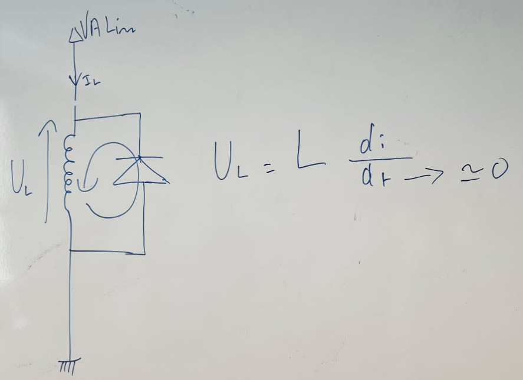
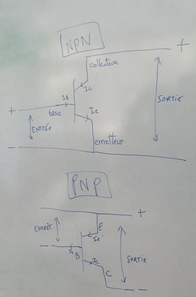
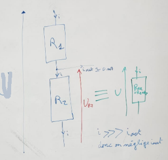
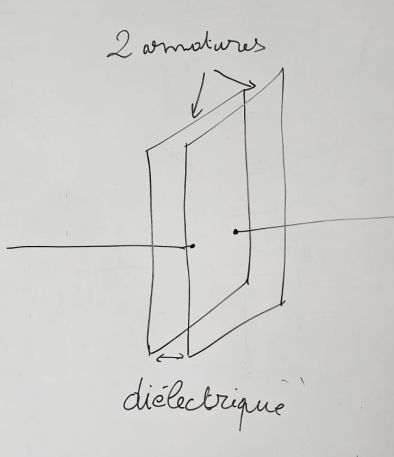
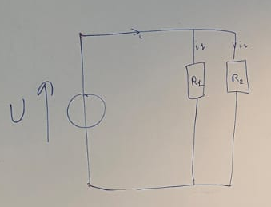
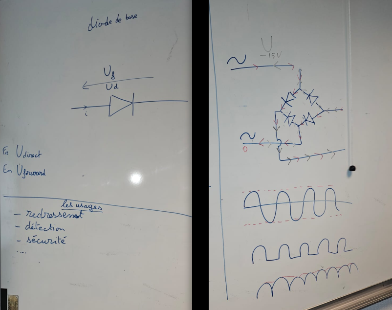

Lors de chaque atelier électronique, nous prenons toujours 5 à 10 minutes pour faire un rappel ou expliquer un composant, une équation, ou une notion essentielle en électronique. Ces moments permettent de renforcer les bases et d'approfondir les concepts abordés. Vous trouverez ci-dessous les rappels de chaque semaine.
Sommaire :
Diode de roue libre
- Transistor
- Pont diviseur de tension
- Condensateur
- Pont diviseur de courant
- Les diodes
Une "diode de roue libre" est un composant électronique utilisé pour protéger les circuits qui comportent des charges inductives, comme des bobines, des relais ou des moteurs. Lorsque l'alimentation d'une bobine est coupée, l'énergie stockée dans l'inductance crée un pic de tension élevé (une surtension) qui peut endommager les composants électroniques du circuit.
La diode de roue libre est placée en parallèle avec la bobine, mais orientée de manière à ne pas conduire le courant lorsque l'alimentation est activée. Lorsque l'alimentation est coupée, la diode conduit le courant induit par l’inductance, permettant à l’énergie de se dissiper de manière sûre. Ainsi, elle limite la surtension en maintenant la tension à un niveau sûr, souvent équivalente à la chute de tension directe de la diode.
En résumé, la diode de roue libre agit comme une protection en absorbant les surtensions générées par l’inductance, évitant ainsi d'endommager les autres composants du circuit.

Le transistor est un composant électronique fondamental utilisé pour amplifier ou commuter des signaux.
Un transistor bipolaire se compose de trois couches de matériaux semi-conducteurs formant trois régions : l’émetteur, la base et le collecteur. Dans un transistor NPN (le plus souvent utilisé), la structure est composée de deux couches de matériau de type N (négatif) entourant une couche de type P (positif). Pour un transistor PNP, c’est l’inverse : deux couches de type P entourant une couche de type N (cf. dessin).
Dans un transistor NPN, le transistor est activé (en conduction) et le courant circule du collecteur vers l’émetteur lorsque la base est suffisamment polarisée positivement par rapport à l’émetteur. Le courant d'entrée (base-émetteur) commande le courant de sortie (collecteur-émetteur).
Le fonctionnement du transistor PNP est similaire mais inversé (cf. dessin). La base doit être négative par rapport à l’émetteur pour permettre la conduction. Sur le dessin ci dessous à droite, Le courant de collecteur (Ic) est proportionnel au courant de base (Ib), le gain en courant étant déterminé par le facteur \(\beta\) (bêta). Le facteur \(\beta\) est défini par :
\[ \beta = \frac{I_C}{I_B} \]

Un pont diviseur de tension est un montage électronique utilisé pour obtenir une fraction de la tension d'entrée. Il se compose de deux résistances (R1 et R2) montées en série.
La tension de sortie (Vout) est calculée avec la formule suivante :
Uout = (R2 / (R1 + R2)) × Uin
Où Uin est la tension d'entrée.
Ce principe est très utilisé en électronique pour ajuster des niveaux de tension ou mesurer des signaux (un ampère se sert de ce principe pour effectuer la mesure du courant).
Attention : Le courant de sortie (Iout) est très faible. Il est donc important de ne pas y brancher de charge nécessitant un courant élevé, car cela pourrait perturber la tension de sortie. Ce type de montage est principalement utilisé pour commander des charges à haute impédance.

Un condensateur est un composant électronique passif qui stocke de l'énergie sous forme de champ électrique. Il est constitué de deux conducteurs (appelés armatures) séparés par un isolant (appelé diélectrique). Les condensateurs sont utilisés dans une variété de circuits pour filtrer les signaux, stabiliser (lisser) les tensions, et stocker l'énergie.
La capacité (C) d'un condensateur est une mesure de la quantité de charge qu'il peut stocker par unité de tension. Elle est exprimée en farads (F).
C = \(\frac{Q}{U}\)
où Q est la charge en coulombs (C) et U est la tension en volts (V).
L'énergie (W) stockée dans un condensateur est donnée par la formule suivante :
W = \(\frac{1}{2} C U^2\)
Cette formule montre que l'énergie est proportionnelle à la capacité du condensateur et au carré de la tension à ses bornes.
Condensateurs en Série : Lorsque des condensateurs sont connectés en série, la capacité équivalente (C_eq) est donnée par :
\(\frac{1}{C_{eq}} = \frac{1}{C_1} + \frac{1}{C_2} + \cdots + \frac{1}{C_n}\)
Condensateurs en Parallèle : Lorsque des condensateurs sont connectés en parallèle, la capacité équivalente (C_eq) est la somme des capacités individuelles :
\(C_{eq} = C_1 + C_2 + \cdots + C_n\)
La tension aux bornes d'un condensateur lors de la charge ou de la décharge peut être calculée avec la formule suivante :
\( U(t) = U_f + (U_0 - U_f) \cdot e^{-\frac{t}{\tau}} \)
où : U(t) : Tension aux bornes du condensateur à l'instant t, U_0 : Tension initiale aux bornes du condensateur, U_f : Tension finale aux bornes du condensateur, \(\tau\) : Constante de temps, égale à \( R \times C \) (résistance multipliée par la capacité), t : Temps écoulé, e : Base du logarithme naturel (environ 2,718)
Il existe plusieurs types de condensateurs, chacun ayant des caractéristiques spécifiques adaptées à des applications différentes : les condensateurs électrolytiques (grande capacité, polarisés, couramment utilisés), les condensateurs céramiques (stables, non polarisés), les condensateurs au tantale (similaires aux électrolytiques, mais avec une meilleure stabilité et durée de vie) et les condensateurs à film (stabilité exceptionnelle et faible distorsion).
Attention, il est crucial de vérifier attentivement les spécifications du condensateur, notamment la capacité maximale, la tension maximale, et la température maximale. Si ces limites sont dépassées, le condensateur risque d'exploser.
En outre, plus vous maintenez le condensateur à une température inférieure à sa température maximale, plus sa durée de vie sera prolongée. Un bon refroidissement et une utilisation en dessous des limites spécifiées augmentent considérablement la fiabilité et la longévité du condensateur.
Plus d'information sur les condensateurs électrolytiques sur ce lien.

Un diviseur de courant est un circuit utilisé pour répartir le courant entrant entre plusieurs branches parallèles. Ce montage est particulièrement utile lorsqu'on souhaite connaître ou ajuster le courant passant dans une branche spécifique d'un circuit.
Le courant dans chaque branche est déterminé en fonction de la résistance de chaque branche. Le courant dans une branche (Ix) est calculé avec la formule suivante :
Ix = (Rtotal / Rx) × Iin
Où Iin est le courant total entrant dans le circuit, Rx est la résistance de la branche dans laquelle on souhaite connaître le courant, et Rtotal est la résistance équivalente du circuit, c'est-à-dire l'inverse de la somme des inverses des résistances de chaque branche parallèle.
La résistance équivalente (Req) pour des résistances en parallèle est donnée par la formule suivante :
Req = 1 / (1/R1 + 1/R2 + ... + 1/Rn)
Ce principe est fréquemment utilisé en électronique pour diviser un courant dans des circuits avec plusieurs composants, chacun ayant des besoins en courant spécifiques. Par exemple, un diviseur de courant permet de contrôler la distribution de courant vers différents composants sans perturber le reste du circuit.
Attention : La résistance totale du circuit est toujours inférieure à la plus petite résistance individuelle. Il est donc important de bien choisir les résistances pour éviter un courant trop faible dans une branche ou un courant trop élevé qui pourrait endommager un composant.

Les diodes sont des composants électroniques essentiels qui permettent au courant de circuler dans une seule direction. Elles jouent un rôle clé dans de nombreux circuits, notamment pour la conversion de courant alternatif en tension redressée (cf. photo avec pont de diodes), la protection contre les surtensions et la régulation de tension.
Il existe plusieurs types de diodes, chacune ayant des propriétés spécifiques adaptées à des applications particulières :
La diode standard (ou diode de redressement) permet au courant de circuler uniquement dans une direction, du côté anode (positif) vers le côté cathode (négatif). Elle est utilisée dans des applications telles que la conversion de courant alternatif en courant continu dans des redresseurs de puissance.
La diode Zener est conçue pour permettre la conduction dans le sens inverse lorsque la tension atteint une valeur spécifique appelée tension Zener. Cette diode est souvent utilisée pour la régulation de tension dans les circuits d'alimentation.
La diode LED (diode électroluminescente) émet de la lumière lorsqu'elle est polarisée dans le sens direct. Utilisée dans des applications d'éclairage et d'affichage, elle est très efficace et consomme peu d'énergie. Les LED sont disponibles dans une large gamme de couleurs, en fonction des matériaux utilisés dans leur construction.
La diode Schottky a une faible chute de tension directe, généralement autour de 0,2 à 0,3 volts, ce qui la rend très efficace dans les circuits à haute fréquence ou nécessitant une réponse rapide. Elle est couramment utilisée dans les alimentations à découpage et les circuits de redressement à haute vitesse.
La diode varicap, ou diode à capacité variable, fonctionne comme un condensateur dont la capacité varie en fonction de la tension appliquée. Elle est principalement utilisée dans les circuits d'accord pour la modulation de fréquence ou les oscillateurs.
Chaque type de diode joue un rôle essentiel en fonction des besoins du circuit. Qu'il s'agisse de redresser, réguler, émettre de la lumière ou gérer des fréquences, les diodes sont des composants incontournables en électronique moderne.
